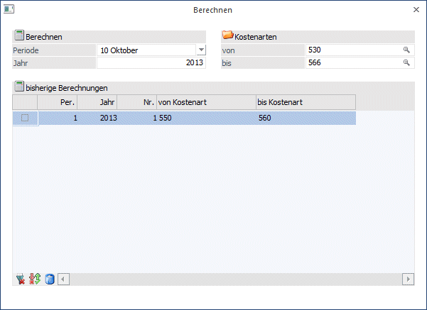
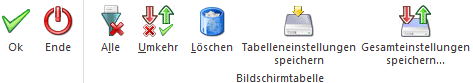

Einige Kostenarten können anhand eines Prozentsatzes aus anderen Kostenarten berechnet werden und müssen daher nicht mehr manuell erfasst werden.
Im Zuge der Berechnung, die im Menüpunkt
1 Kosten
1 Berechnung
aufgerufen wird, erstellt das Programm automatisch auf allen Kostenstellen, die Journalzeilen mit den Basiskostenarten enthalten, eine neue Journalzeile für Lohnnebenkosten. Der Buchungsbetrag errechnet sich dabei durch den im Kostenartenstamm eingetragenen Prozentsatz.
Beispiel
Auf der Kostenstelle "Lager" sind bereits Leistungslöhne in der Höhe von 20.000,- und Nichtleistungslöhne in der Höhe von 10.000,- gebucht. Im Kostenartenstamm der zu berechnenden Kostenart "Lohnnebenkosten" ist der Prozentsatz von 70 % hinterlegt. Das Programm erstellt daher auf der Kostenstelle "Lager" eine neue Journalzeile mit dem Betrag von 21.000,-

Bei Aufruf des Menüs Berechnen wird die aktuelle Periode aufgrund des Systemdatums vorgeschlagen. Diese kann jederzeit editiert werden kann.
Ø Periode
Eingabe der Periode, für die die Kostenart berechnet werden soll. Als Buchungsdatum wird jeweils der letzte Tag der selektierten Periode verwendet.
Ø Jahr
Eingabe des Jahres.
Ø Kostenarten von - bis
Wird die Eingabe mit ENTER übergangen, werden automatisch alle zu berechnenden Kostenarten berechnet. Selektieren Sie einen bestimmten Kostenartenbereich, werden nur die Kostenarten berechnet, die innerhalb der Auswahl liegen.
Der Hinweis
soll darauf aufmerksam machen, dass die Berechnung innerhalb der gewählten Perioden nicht beliebig oft durchgeführt werden darf, da sonst mehrfache Berechnungen gebucht würden.
Buttons

Ø OK
Mit OK oder F5 wird die Berechnung entsprechend den Eingabefeldern durchgeführt.
Ø Ende
Mit Ende schließen sie das gesamte Fenster.
Ø Alle
Beim Drücken dieses Buttons werden alle Datensätze der Tabelle aktiviert
Ø Umkehr
Durch Anklicken des Umkehr-Buttons wird die Selektion ins Gegenteil verkehrt: alle aktiven Checkboxen werden inaktiv gesetzt und alle inaktiven Checkboxen werden aktiv gesetzt.
Ø Löschen
Beim Betätigen des Löschen-Buttons werden die ausgewählten Berechnungszeilen rückgängig gemacht. Im Anschluss kann eine Neuberechnung erfolgen.
Es erfolgt eine Sicherheitsabfrage vor dem Löschen:
Ø Tabelleneinstellungen speichern
Die Spalten einer Tabelle können grundsätzlich an beliebige Positionen verschoben, bzw. in der Breite entsprechend angepasst werden. Durch Anwahl des Buttons "Tabelleneinstellungen speichern" werden die Einstellungen benutzerspezifisch gespeichert und bei dem nächsten Aufruf des Programmpunktes wieder vorgeschlagen.
Ø Gesamteinstellungen speichern
Im Gegensatz zu "Tabelleneinstellungen speichern" können mit "Gesamteinstellungen speichern" mehrere Tabellenaufbauten gespeichert und nach Wunsch geladen werden. Zusätzlich werden Sonderfunktionen der Tabelle (z.B. "Spalte gruppieren") ebenfalls bei der Speicherung bedacht.